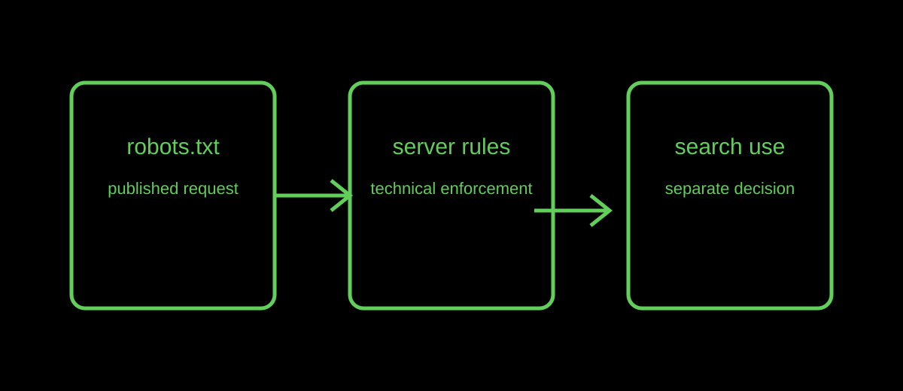

AI and crawling
AI Crawlers and robots.txt: What a Website Can Actually Control
A robots.txt rule can communicate a crawling preference. It does not, by itself, guarantee who can access a server or how a search product will use every public signal.
Published · By the bug breeder

The short answer
Start by deciding what outcome you need. If you want to publish a preference to well-behaved crawlers, robots.txt is relevant. If a resource must be private, use authentication or server-side access rules. If you are asking whether a page will be indexed or surfaced, that is a separate product decision.
Why the distinction matters
The Robots Exclusion Protocol explicitly says that its rules are not a form of access authorization. A crawler's self-described name and a public text file are useful signals, but neither is an identity system.
Google's documentation also distinguishes crawler controls from inclusion and describes its generative-search guidance in terms of useful, accessible content rather than a special AI-only markup trick.
A practical publishing choice
Keep public articles readable in HTML, describe them accurately, and use a truthful robots.txt file. Use a sitemap as a discovery hint. For information that cannot be public, do not rely on a crawler directive; keep it behind an access boundary from the start.
Limits
This article does not certify any individual bot or predict how any service will behave. Policies, user agents, and product controls can change; confirm the current documentation for a service before changing production rules.